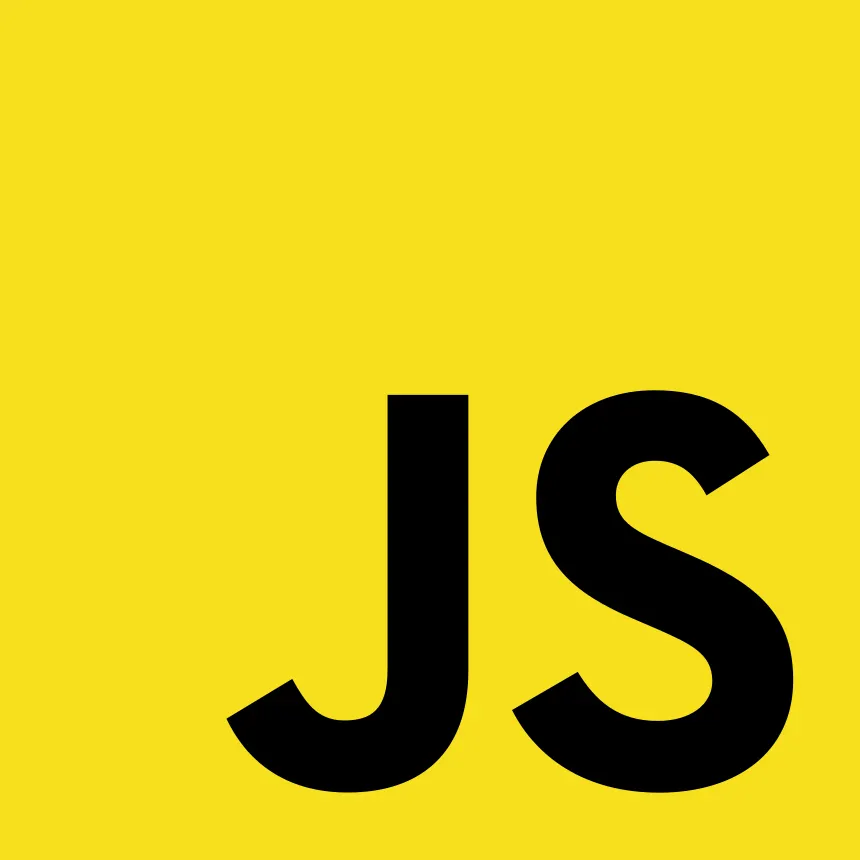

Sobre Mi
¡Hola! Soy un aficionado del desarrollo web y me encuentro cursando la carrera Universitaria en Programación en la Universidad Tecnológica Nacional. Actualmente me encuentro cursando el segundo año de la carrera y este es el primer trabajo practico de la materia programacion III.
Conocimientos
- Python
- Javascript
- CSS
 HTML
HTML MySQL
MySQL
Proyectos
Referen
Formo parte de un equipo de desarrollo en una StartUp llamada ONNO. Aunque aún en fase de diseño y prototipado, estamos creando Referen, una aplicación web. Tanto la idea como el desarrollo están protegidos como propiedad intelectual, representando un esfuerzo colaborativo entre diseñadores y desarrolladores. Mi participación incluye:
- Desarrollo de la interfaz de usuario (UI).
- Implementación de la lógica del lado del cliente.
- Colaboración en el diseño de la arquitectura de la aplicación.